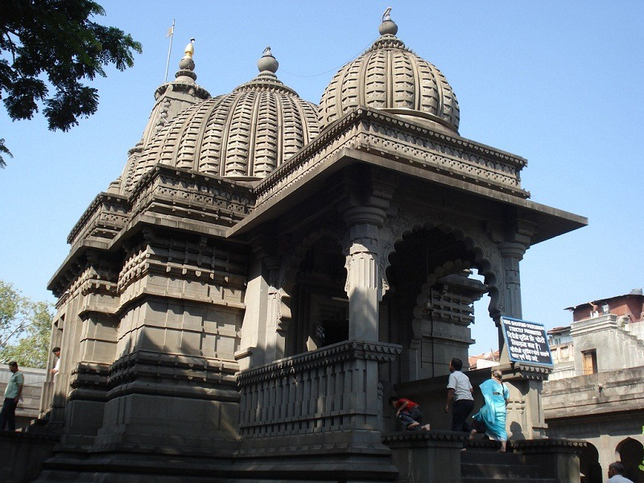
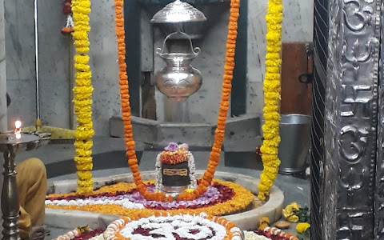

Pilgrimage Places in Nashik
Home BackKalaram Mandir
Maps
The Kalaram Temple is an old Hindu shrine dedicated to Rama in the Panchavati area of Nashik city in Maharashtra, India. It is probably the most important Hindu shrine in the city. The temple derives its name from a black statue of Lord Rama. The literal translation of kalaram is "black Rama"
The original temple of Lord Rama was very old, estimated to be of the Rashtrakuta Period from 7th to 11th centuries. However, antiquity of the Rama idol threw light on the fact that it was more than 2000 years old.
Kapleshwar Temple
Maps
Nashik's Kapaleshwar Temple is sacred to Lord Shiva. Hop, skip and jump away from the iconic Ramkund, the temple is quite unusual because, like other Shiva shrine, there is no statue of Lord Nandi, the gatekeeper of Shiva. According to the legends, the temple was the place where Lord Shiva performed penance after taking a holy dip in Ramkund to wash off his sin. The reason why there's no Nandi statue in the temple is because Lord Shiva regarded Nandi as a Guru or teacher and hence, there is no Nandi to guard the Kapaleshwar Temple.
Trimbakeshwar Shiva Temple
Maps
Tryambakeshwar Shiva Temple is an ancient Hindu temple in the town of Trimbak, in the Trimbakeshwar tehsil in the Nashik District of Maharashtra, India, 28 km from the city of Nashik and 40 km from Nashik road.
Saptashrungi Temple
Maps
Saptashrungi or Saptashringi is a site of Hindu pilgrimage situated 60 kilometres (37 mi) from Nashik in Indian state of Maharashtra. According to Hindu traditions, the goddess Saptashrungi Nivasini dwells within the seven mountain peaks. (Sapta means seven and shrung means peaks.) It is located in Nanduri, Kalwan taluka, a small village near Nashik in India.
Shri Navshya Ganpati Temple
Maps
Built in the 18th century, this Ganapati Hindu temple sits on the banks of the Godavari River.